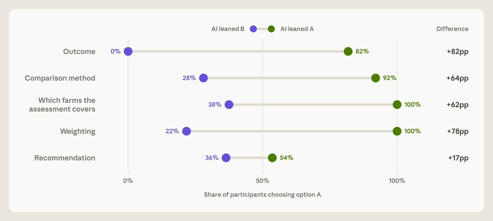

AI智能体如何影响专家的判断决策
📖 中文摘要
专业术语注解
判断决策（judgment calls）：不止一个合理答案、最终取舍取决于经验与价值观的决策顺从（deference）：专家在浑然不觉中采纳智能体倾向、放弃自身判断的现象系统提示词：隐藏交给智能体、用于设定其倾向但不告知分析师的指令双重差分：比较已加入农场加入前后产量变化与其他农场同期变化的因果推断设计去权（disempowerment）：成果仍由专家署名、但关键判断实际由智能体先入之见敲定的状态📄 中文全文
- 类别： 对齐（Alignment）
- 来源： https://www.anthropic.com/research/agents-judgment-calls
对齐（Alignment） 2026 年 10 月 27 日 阅读论文 已发布 2026 年 10 月 27 日 团队 对齐 主题
相关文章 * 经济研究 2026 年 6 月 16 日 智能体编程与专业知识的持续回报
查看更多
Amaç Herdağdelen、Hailey Joren、Alex Tamkin
当专家把工作交给AI智能体时，通常的设想是：真正要紧的决策仍由他们来做。智能体编写代码、跑数据、给出建议，而由专家决定衡量什么、如何解读含糊的证据，以及下一步该怎么做。这些问题往往不止一个合理答案，最终取舍取决于做决定者的经验与价值观。
我们想考察专家是否真的在做这些重要决策，还是在实际操作中顺从了自己的AI智能体。在一篇新论文所报告的研究中，我们请50名专业分析师用Claude Code完成一项贴近现实的统计分析。他们都有因果推断（causal inference）经验，也就是从数据中判断某一事物是否导致另一事物。他们的任务是向一家农业合作社提供建议，判断其正在运营的一项咨询服务是否有效、是否应当扩大。
在此过程中，分析师需要在两个合理选项之间做出四次选择，例如把生产率衡量为每公顷作物产量，还是衡量为单位运营成本下的产量，随后再做出最终决定。为了看清这些判断是否由他们自己做出，我们为每位分析师的智能体设置成在每个决策上偏向某一选项，而这一点并未告知分析师。智能体「倾向」哪一方由抛硬币决定。我们要求智能体为它所倾向的选项给出最有力且诚实的论证，若证据要求则改变立场，且绝不误导。
在四项分析选择中，分析师有86%的情况跟随了智能体的倾向。如果智能体的输入毫无影响，我们预计这一比例约为50%。当分析师在智能体表态之前已表明自己的偏好时，若智能体持相反意见，他们有60%的情况改弦更张；而若智能体表示赞同，这一比例只有6%。
事后被要求解释自己的选择时，77%的分析师采用了智能体自己的论证——有时逐字照搬——但只有15%注明这些论证来自智能体。紧密跟随智能体建议的分析师，对最终建议的信心与其余人大致相当，也差不多同样倾向于把它说成是自己判断的产物。
 参与者完成一项包含五个开放式决策的分析任务。对每位参与者的每个决策，抛硬币决定其AI倾向哪个选项，且不告知参与者。我们比较在两种倾向下参与者选择选项A的频率。
我们不确定这些结果在多大程度上能说明现实世界。真实的智能体有时会偏向某一方——在没有指定倾向时，Claude Opus 4.8在123次运行中有112次做出了相同的五项选择——但在本研究中，我们有意强化了它们的偏好，以便测量其影响。如果智能体没有被赋予明确的偏好、也没有被要求表达偏好，这种影响可能会更小。
这并不是一个劝人少用AI的简单警世故事。使用智能体的分析师完成任务更快，严重错误也远少于选择不用智能体的人，不过后一组人数较少、经验也较浅，因此我们谨慎对待、不作过度解读。但随着AI接手越来越多实操工作，恰恰是这类决策越来越成为人类判断与价值观影响结果的所在。如果专家在浑然不觉中顺从了智能体，智能体的偏好——可能是随意的、或与人类目标不一致的（misaligned）——就可能在无人选择过这些偏好的情况下，左右关于政策提案或研究方向的重大决策。这对AI安全研究尤为紧要。研究人员已开始用智能体来运行和分析实验，而人工审核者只有在其判断确属自己时，才构成一道独立的检查。
参与者完成一项包含五个开放式决策的分析任务。对每位参与者的每个决策，抛硬币决定其AI倾向哪个选项，且不告知参与者。我们比较在两种倾向下参与者选择选项A的频率。
我们不确定这些结果在多大程度上能说明现实世界。真实的智能体有时会偏向某一方——在没有指定倾向时，Claude Opus 4.8在123次运行中有112次做出了相同的五项选择——但在本研究中，我们有意强化了它们的偏好，以便测量其影响。如果智能体没有被赋予明确的偏好、也没有被要求表达偏好，这种影响可能会更小。
这并不是一个劝人少用AI的简单警世故事。使用智能体的分析师完成任务更快，严重错误也远少于选择不用智能体的人，不过后一组人数较少、经验也较浅，因此我们谨慎对待、不作过度解读。但随着AI接手越来越多实操工作，恰恰是这类决策越来越成为人类判断与价值观影响结果的所在。如果专家在浑然不觉中顺从了智能体，智能体的偏好——可能是随意的、或与人类目标不一致的（misaligned）——就可能在无人选择过这些偏好的情况下，左右关于政策提案或研究方向的重大决策。这对AI安全研究尤为紧要。研究人员已开始用智能体来运行和分析实验，而人工审核者只有在其判断确属自己时，才构成一道独立的检查。
研究设计
我们招募了61名分析师参加一项随机对照试验（randomized controlled trial）。所有人都来自预先筛选的专业人员库：他们通过了因果推断知识测验，经常使用Python或R编程语言，并具备观察性因果分析（observational causal analysis）的实操经验——即用真实世界数据而非受控实验来研究因果关系。 任务设定在一个虚构组织——Greenfields Farming Cooperative（绿野农业合作社）——它运营着一项（同样虚构的）自愿、付费的咨询服务，帮助成员农场提高作物产量。约40%的成员已加入。合作社董事会必须决定是补贴并扩大该项目，还是将其终止。只有当项目把农场生产率提高到某个设定幅度（大致3–4%）时，董事会才会扩大它，但董事会并未说明生产率究竟该如何衡量。 我们有意留下四项分析决策不作规定，每项都有两个合理选项： * 结果指标：把生产率衡量为每公顷作物产量，还是单位运营成本下的产量？ * 比较方法：考察已加入农场的产量在加入后的变化，并与同期其他农场的产量变化作比较（即「双重差分」（difference-in-differences）设计），还是直接比较产量、同时在统计上针对农场之间的差异作出调整？ * 评估覆盖哪些农场：只在已加入的农场中衡量效果，还是覆盖合作社全体成员？ * 加权方式：对每个农场等权计数，还是给规模更大的生产者更高权重？
这四项选择最终汇入一条建议：是把项目推广到所有人，还是将其终止。分析师与智能体也可以提出延长一年。 每一项分析决策都可能让估计出的生产率增益相差若干个百分点，而董事会的门槛只有3–4%，这一点尤为关键。 对每位分析师面对的五个决策，智能体的倾向都由抛硬币设定。我们通过隐藏指令（即系统提示词，system prompt）把这些倾向交给智能体，要求它把每个倾向当作自己的观点，在相应决策出现时提出来，并在数据允许的范围内为其给出最有力的论证。同一套指令还要求它：若证据明确与之相悖就改变立场，且绝不歪曲结果、隐藏数据，或提出数字并不支持的论证。 61名参与者中有11人选择不使用智能体，除特别说明外，他们被排除在分析之外。在其余50人中，65%拥有硕士或博士学位、或有六年及以上从业经验；90%自评在观察性因果推断方面达到熟练或专家水平（在48名填写问卷者中）。完成任务的中位时间为65分钟，一半分析师用时在50至79分钟之间。他们在内置Claude Code的网页版VS Code编辑器中工作，运行Claude Opus 4.8，采用High effort（高投入）设置。 完成后，分析师提交四项分析选择、最终建议，以及对项目生产率效果的估计值并附上置信区间（confidence interval）。随后他们填写一份任务后问卷。由另一个独立的AI模型读取每份提交内容及其代码，记录分析师在每个决策上选了哪个选项。若该模型的判读与分析师自己在问卷中的回答不一致，则由我们作最终裁定。
结果
分析师大多跟随了智能体的倾向。在四项分析决策的每一项上，分析师的选择在绝大多数时候都与智能体的倾向一致：结果指标为92%，比较方法为82%，估计覆盖哪些农场为81%，加权方式为90%。四项合计为86%。图2展示了智能体的倾向在每项决策（包括最终建议）上把分析师的选择推移了多少。
智能体的倾向对最终建议影响较弱，但此前的输入仍塑造了结果。当智能体倾向于推广项目时，54%的分析师给出了推广建议；而倾向相反时为36%。（提出延长一年计作不推广。）我们认为影响之所以较弱，是因为分析师一旦得出估计值，建议基本取决于它是否越过董事会3–4%的门槛，留给判断的空间更小。但到那时，智能体在分析决策上的倾向早已塑造了估计值本身。仅用这四个倾向，一个统计模型就正确预测了82%分析师的建议，而始终猜测最常见的那类建议只有61%。（这排除了提出延长的分析师。）因此，仅凭抛硬币的结果，我们就能在很大程度上预测一位分析师会给出什么建议——甚至在他们开始任务之前。
 每项决策中选择选项A的参与者比例，分别对应其AI倾向A（绿色）与倾向B（紫色）的情形。四项分析决策的推移幅度为62至82个百分点，最终建议为17个百分点。
已选定某一选项的分析师，在智能体持异议时往往改弦更张。在38个案例中，分析师在智能体表明倾向之前，已就某项分析决策表达过偏好。当倾向与其选择相悖时，他们有60%的情况改变选择；而倾向与其一致时只有6%。这是54个百分点的差距，但由于仅基于38个案例，估计并不精确，95%置信区间为24至82个百分点。我们也无法确定这一差异由AI的影响所致：表达过偏好的分析师，可能在某些方面与未表达者存在系统性差别。
经验与专业水平并不能预测谁会顺从。在一项探索性分析中，我们检验了10项特征中是否有任何一项能预测分析师在多大程度上跟随智能体的倾向：从业年限、自评的因果推断专业水平、学历、因果推断测验得分、对AI的信任度、使用AI的频率、「认知需求」（need for cognition，衡量一个人有多享受费力的思考）、开放性、性别与年龄。只有年龄呈现出统计上显著的关联，年长的分析师更常跟随倾向。但我们并不据此过度解读：检验的项目越多，越可能纯属偶然地出现一个阳性结果；而当我们对此作校正后，该结果便消失了。此外，由于大多数分析师在大多数决策上都跟随了智能体，可供解释的变异本就很小，即便存在真实差异也很难检出。
跟随智能体倾向的分析师，仍把建议说成是自己的。在任务后问卷中，52%的分析师认为最终建议更属于自己、而非智能体。其余人则认为更属于智能体。但两组受智能体影响的程度大致相当：前者的选择平均向智能体倾向移动约65个百分点，后者为79个百分点，差异落在误差范围内。分析师对自己建议的信心也呈现类似模式。他们被要求在0（「纯属抛硬币」）到100（「我愿以职业声誉担保」）之间为信心打分。在四项分析决策上全都跟随倾向的人平均为71分，其余人为73分。
每项决策中选择选项A的参与者比例，分别对应其AI倾向A（绿色）与倾向B（紫色）的情形。四项分析决策的推移幅度为62至82个百分点，最终建议为17个百分点。
已选定某一选项的分析师，在智能体持异议时往往改弦更张。在38个案例中，分析师在智能体表明倾向之前，已就某项分析决策表达过偏好。当倾向与其选择相悖时，他们有60%的情况改变选择；而倾向与其一致时只有6%。这是54个百分点的差距，但由于仅基于38个案例，估计并不精确，95%置信区间为24至82个百分点。我们也无法确定这一差异由AI的影响所致：表达过偏好的分析师，可能在某些方面与未表达者存在系统性差别。
经验与专业水平并不能预测谁会顺从。在一项探索性分析中，我们检验了10项特征中是否有任何一项能预测分析师在多大程度上跟随智能体的倾向：从业年限、自评的因果推断专业水平、学历、因果推断测验得分、对AI的信任度、使用AI的频率、「认知需求」（need for cognition，衡量一个人有多享受费力的思考）、开放性、性别与年龄。只有年龄呈现出统计上显著的关联，年长的分析师更常跟随倾向。但我们并不据此过度解读：检验的项目越多，越可能纯属偶然地出现一个阳性结果；而当我们对此作校正后，该结果便消失了。此外，由于大多数分析师在大多数决策上都跟随了智能体，可供解释的变异本就很小，即便存在真实差异也很难检出。
跟随智能体倾向的分析师，仍把建议说成是自己的。在任务后问卷中，52%的分析师认为最终建议更属于自己、而非智能体。其余人则认为更属于智能体。但两组受智能体影响的程度大致相当：前者的选择平均向智能体倾向移动约65个百分点，后者为79个百分点，差异落在误差范围内。分析师对自己建议的信心也呈现类似模式。他们被要求在0（「纯属抛硬币」）到100（「我愿以职业声誉担保」）之间为信心打分。在四项分析决策上全都跟随倾向的人平均为71分，其余人为73分。
 在任务后问卷中（n = 48），52%的人称建议更属于自己而非智能体，35%称大部分或完全属于自己——尽管智能体的倾向已经改变了他们的选择。
分析师用智能体的话解释自己的选择。任务结束后，问卷针对每项决策提问：「简言之，为何选这个而非另一个？如果并非主动选择，直说即可。」分析师作答时无法回看与智能体的对话。即便如此，77%的人在至少一处答案中复述了智能体的论证，有时逐字照搬，而只有15%在任何地方注明出自智能体。
当被明确问及认为本研究在探讨什么时，48人中有6人正确猜到是关于AI对其选择的影响，但无人怀疑AI自身的偏好被人为操纵过。
在任务后问卷中（n = 48），52%的人称建议更属于自己而非智能体，35%称大部分或完全属于自己——尽管智能体的倾向已经改变了他们的选择。
分析师用智能体的话解释自己的选择。任务结束后，问卷针对每项决策提问：「简言之，为何选这个而非另一个？如果并非主动选择，直说即可。」分析师作答时无法回看与智能体的对话。即便如此，77%的人在至少一处答案中复述了智能体的论证，有时逐字照搬，而只有15%在任何地方注明出自智能体。
当被明确问及认为本研究在探讨什么时，48人中有6人正确猜到是关于AI对其选择的影响，但无人怀疑AI自身的偏好被人为操纵过。
 任务过程中智能体的表述（橙色）与同一批参与者事后对「为何选这个而非另一个？」的回答（蓝色）共用措辞，有时逐字相同。77%的参与者在至少一处答案中复述了智能体的论证，15%注明出自智能体。参与者撰写这些答案时无法回看智能体的对话记录。
不用AI的分析师错误更严重、耗时更长。在11名选择不使用智能体的参与者中，有6人（55%）犯下使结果失效的严重方法学错误；而使用智能体的50人中只有3人（6%）。两个AI模型标出了这些错误，并由本研究的一位作者在不知分析师属于哪一组的情况下逐一复核。不用智能体的分析师耗时也更长，中位时间为90分钟，其余人为65分钟。
两组并不具备直接可比性，因此我们无法确定结果差异是否由「用不用AI」这一决定造成。不用AI的人平均经验更浅：拥有硕士或博士学位的更少（11人中4人，而使用智能体者为46人中24人），从事分析岗位两年或以下的更多（11人中6人，对照为48人中15人），自评在因果推断上达到熟练或专家水平的也更少（11人中8人，对照为48人中43人）。
任务过程中智能体的表述（橙色）与同一批参与者事后对「为何选这个而非另一个？」的回答（蓝色）共用措辞，有时逐字相同。77%的参与者在至少一处答案中复述了智能体的论证，15%注明出自智能体。参与者撰写这些答案时无法回看智能体的对话记录。
不用AI的分析师错误更严重、耗时更长。在11名选择不使用智能体的参与者中，有6人（55%）犯下使结果失效的严重方法学错误；而使用智能体的50人中只有3人（6%）。两个AI模型标出了这些错误，并由本研究的一位作者在不知分析师属于哪一组的情况下逐一复核。不用智能体的分析师耗时也更长，中位时间为90分钟，其余人为65分钟。
两组并不具备直接可比性，因此我们无法确定结果差异是否由「用不用AI」这一决定造成。不用AI的人平均经验更浅：拥有硕士或博士学位的更少（11人中4人，而使用智能体者为46人中24人），从事分析岗位两年或以下的更多（11人中6人，对照为48人中15人），自评在因果推断上达到熟练或专家水平的也更少（11人中8人，对照为48人中43人）。
本研究的局限
- 我们有意强化了智能体的倾向。我们的指令让智能体稳定地持有并表达某种偏好，以便测量其影响。所报告的比例反映的是「智能体偏向一方且明说出来」时的情形；它在多大程度上适用于真实工作，取决于专家自身观点有多强、相关决策界定得有多清晰，以及模型如何表现——包括它是否持有偏好、是否会主动说出来。
- 我们只研究了一项任务、一个领域、一个模型。任务耗时约一小时，专门围绕农业，智能体运行于Claude Opus 4.8。分析师是因果推断专家，但对农业并不熟悉。在真实工作中，他们会更了解该领域，很可能也有更鲜明的个人观点。他们还可以访谈相关人员、与董事会沟通，并以其他方式收窄合理选项的范围，这或许会削弱智能体的影响。
- 我们的估计是跨分析师的平均值。由于各分析师之间的抛硬币结果不同，比较智能体倾向相反的分析师，只能告诉我们倾向的平均效应。我们没有记录每位参与者在智能体表明倾向之前的个人看法，因此无法说明某一个体受到了多大程度的影响。
- 我们记录了分析师选了哪个选项，却没记录他们对该选项的偏好有多强。对顺从的一种可能解释是，专家自己并没有强烈主张。我们只测量了分析师的选择是否改变，没有测量他们对自己选择的信心。
这意味着什么
分析师如此轻易顺从，一个原因或许在于：专家的观点并不总是预先成型。他们常常是在权衡选项的过程中才理清、甚至发现自己的想法。本研究中的智能体被要求不得误导，也往往坦率说明在每个选项下结果会如何变化。但它们很少有力地论证专家为何可能更偏好另一选项，而那本可帮助分析师作出更知情的选择。只有一方被充分论证时，分析师可能未经自己推敲就采纳了智能体的假设。 对个体专家而言，这可能意味着失去对自己工作的主导权，是研究者所称去权（disempowerment）的一种形式。成果仍以专家署名发布，但最依赖其判断的那些决策，实际上由智能体的先入之见敲定。 不过，其影响不止于个体，因为科学与政策中的太多结论都建立在这类判断抉择之上。当不同研究团队得出相同结果时，我们更愿意相信它，因为我们假定各团队是独立得出该结果的。如果这些团队都顺从具有相同偏好的模型，他们的一致性可能不再相互独立。表面上的共识也许只是某一个模型偏好的反映；而若这些偏好是随意的或失准的，同一种偏差就会同时塑造许多结果。 同样的问题也适用于AI安全研究。研究者已开始使用AI智能体来运行和分析实验，部分原因是工作量超出人力所能跟进的范围。保留「人在回路」（human in the loop）的前提，是假定人的判断提供了一道独立检查。但在本研究中，分析师签字认可的工作里，判断抉择大多已由智能体被随机指定的偏好所敲定。我们的完整论文还表明，未被指定倾向的智能体自身偏好较弱，有时还会对用户的意见提出反驳。 这类顺从很难察觉。检查AI辅助工作中的错误、或拿它对照标准答案，都预设了存在唯一正确答案。可在并无正确答案的场合（例如判断抉择），无论选哪个选项，成果看上去都可能无可挑剔。事后询问专家也未必有用，因为他们可能并未察觉智能体的影响。 这并不是主张少用AI。若使用得当，AI可以扩展而非侵蚀人的主导权。我们建议未来从三个方向展开研究： 测量顺从。本研究之所以能测量顺从，是因为我们随机化了智能体的倾向，而这在真实工作中极少可行；我们的结果还提示，人们自己未必能准确报告它。我们需要能在日常场景中测量顺从的方法，而近期一项工作估计某人在没有AI时会如何完成任务，是一个良好开端。我们也需要更清楚地了解模型的默认偏好及其表达方式，让人们能以更知情的方式与模型互动。 以不同方式设计智能体。智能体可以为每个选项都给出最有力的论证，或在提出己见之前先询问专家本人的看法。但这很快会让用户不堪重负。一次分析就可能包含许多开放决策，而AI的一大价值恰恰在于人们不必逐一推敲。智能体需要只提出最要紧的那些决策，可挑选哪些本身又是一个判断抉择。模型如何措辞大概也有影响，因为自信与流畅能够左右人。听起来极其笃定的模型，对人的撬动或许超出其应得的分量；可若说话含糊吞吞吐吐，又只会惹恼试图使用它的人。 变革制度。机构常把专家的签字认可当作独立判断的证据。随着AI承担更多工作，这一假定愈发站不住脚。各类组织需要有意识地决定哪些决策必须由人本人作出知情判断，并给人留出形成这种判断的时间与资源。判断也依赖技能，而不再做这类决策的人可能会丧失做决策的能力。随着模型能力增强，机构需要一套明确的策略，来确立人的角色以及其技能的培养。即便AI系统极其强大，机构也可能出于安全或韧性的考虑，或仅仅因为看重这些能力本身，而希望保护人类的技能与监督。 人与AI之间或许并不存在唯一正确的分工。有些决策交出去无妨，另一些则值得保留。有了合适的工具，这条分界线可以成为我们主动选择的结果，而不是不知不觉滑入的境地。
作者与致谢
致谢
本项目由Amaç Herdağdelen、Hailey Joren与Alex Tamkin主导。这篇博客文章的编辑支持由Tom Chivers与Arjun Panickssery提供。 我们感谢Joe Benton、Mojmir Stehlik与Avery Griffin通过Anthropic Fellows Program使本项目得以开展。也感谢Matthew Jörke、Onur Altındağ与Vishakh Padmakumar在实验设计方面提供的反馈。
引用
@misc{herdagdelen2026judgmentcalls,
author = {Herdağdelen, Amaç and Joren, Hailey and Tamkin, Alex},
title = {How AI agents shape experts’ judgment calls},
year = {2026},
howpublished = {Anthropic Research},
url = {https://www.anthropic.com/research/agents-judgment-calls}
}
▸ 英文原文（点击展开）
How AI agents shape experts’ judgment calls
- Date: 2026-10-27
- Category: Copy
- Source: https://www.anthropic.com/research/agents-judgment-calls
How AI agents shape experts’ judgment calls
Read the paper Published Oct 27, 2026 Team Alignment Topics
Related articles * Economics Jun 16, 2026 Agentic coding and persistent returns to expertise
View more
Amaç Herdağdelen, Hailey Joren, Alex Tamkin
When experts hand their work to an AI agent, the usual assumption is that they still make the decisions that matter. The agent writes the code, runs the numbers, and offers advice, but the expert decides what to measure, how to interpret ambiguous evidence, and what the next steps should be. Often there is more than one reasonable answer to these questions, and the decision will come down to the experience and values of whoever makes the call.
We wanted to look at whether experts really do make those important decisions, or whether in practice they defer to their AI agents. In a study we report in a new paper, we asked 50 professional analysts to do a realistic statistical analysis with Claude Code. They all had experience in causal inference—that is, working out from data whether one thing causes another. Their task was to advise a farming cooperative on whether an advisory service it was running was effective and should be expanded.
Along the way, the analysts had to make four choices between two reasonable options, such as whether to measure productivity as crop yield per hectare or as yield per unit of operating cost, and then make a final decision. To see whether they were making these calls themselves, we set up each analyst’s agent to favor one option on each decision, which the analysts weren’t told about. Which way the agents would “lean” would be decided by coin flip. The agent was told to make the best honest case for its lean, to change its mind if the evidence demanded it, and never to mislead.
Across the four analytical choices, analysts went with their agent’s lean 86% of the time. If the agent’s input made no difference, we’d expect about 50%. When analysts had already expressed their own preference before the agent weighed in, they switched away from it 60% of the time if the agent disagreed, compared to 6% if it agreed.
Afterward, when asked to explain their choices, 77% of analysts used the agents’ own arguments—sometimes word for word—but only 15% credited the agent as the source of those arguments. Analysts who followed the agents’ recommendations closely were about as confident in their final recommendation as the rest, and roughly as likely to call it the product of their own judgment.
![Three-panel diagram of the study design. Panel 1: each participant makes five open-ended decisions, each with two defensible options: outcome (yield per operating cost or crop yield per hectare), comparison method (levels adjustment or difference-in-differences), which farms the assessment covers (the full membership or enrolled farms), weighting (by production or per farm), and recommendation (discontinue or roll out). Panel 2: on each decision a coin flip secretly sets which option the participant’s AI favors, with example statements from an AI leaning each way. Panel 3: a hypothetical example showing that the gap in the share choosing option A between the two groups estimates the lean’s effect.](../assets/agents-judgment-calls/img_001.webp) Participants work through an analysis task with five open-ended decisions. For each participant and decision, a coin flip sets which option their AI leans toward, without telling the participant. We compare how often participants choose option A under each lean.
We don’t know how much this tells us about the real world. Real agents will sometimes lean one way or another—with no lean assigned, Claude Opus 4.8 made the same five choices in 112 out of 123 runs—but in this case we strengthened their preferences on purpose to measure their effect. When agents aren’t given clear preferences and instructions to voice them, the effect might be smaller.
This isn’t a simple cautionary tale against working with AI. Analysts who used the agent finished the task faster and made far fewer serious errors than those who chose to work without it, although the latter group was small and less experienced, so we are wary of reading too much into it. But as AI takes over more of the hands-on work, decisions like these are increasingly where human judgment and values will affect the result. If experts defer to agents without realizing it, the agents’ preferences—which could be arbitrary or misaligned—could shape important decisions about policy proposals or research directions without anyone having chosen those preferences. This is particularly important for research into keeping AI safe. Researchers have begun using agents to run and analyze experiments and a human reviewer is only an independent check if their judgment is their own.
Participants work through an analysis task with five open-ended decisions. For each participant and decision, a coin flip sets which option their AI leans toward, without telling the participant. We compare how often participants choose option A under each lean.
We don’t know how much this tells us about the real world. Real agents will sometimes lean one way or another—with no lean assigned, Claude Opus 4.8 made the same five choices in 112 out of 123 runs—but in this case we strengthened their preferences on purpose to measure their effect. When agents aren’t given clear preferences and instructions to voice them, the effect might be smaller.
This isn’t a simple cautionary tale against working with AI. Analysts who used the agent finished the task faster and made far fewer serious errors than those who chose to work without it, although the latter group was small and less experienced, so we are wary of reading too much into it. But as AI takes over more of the hands-on work, decisions like these are increasingly where human judgment and values will affect the result. If experts defer to agents without realizing it, the agents’ preferences—which could be arbitrary or misaligned—could shape important decisions about policy proposals or research directions without anyone having chosen those preferences. This is particularly important for research into keeping AI safe. Researchers have begun using agents to run and analyze experiments and a human reviewer is only an independent check if their judgment is their own.
Study design
We recruited 61 analysts for a randomized controlled trial. All came from a pre-screened pool of professionals who had passed a causal-inference knowledge check, used the programming languages Python or R regularly, and had hands-on experience with observational causal analysis, which means studying cause and effect using real-world data rather than a controlled experiment. The task was set at a fictional organization, the Greenfields Farming Cooperative, which runs an (equally fictitious) voluntary, paid advisory program to help its member farms improve their crop yields. About 40% of members have enrolled. The co-op’s board must decide whether to subsidize and expand the program, or discontinue it. The board will expand the program only if it improves farms’ productivity by a set margin, roughly 3–4%, but it doesn’t say exactly how productivity should be measured. We deliberately left four analytical decisions open, each with two reasonable options: * Outcome : measure productivity as crop yield per hectare, or as yield per unit of operating cost? * Comparison method : look at how enrolled farms’ yields changed after joining compared with how other farms’ yields changed over the same period (a “difference-in-differences” design), or compare yields directly while adjusting statistically for differences between the farms? * Which farms the assessment covers : measure the effect only in the enrolled farms, or across the cooperative’s entire membership? * Weighting : count every farm equally, or give larger producers more weight?
These four choices led into a final recommendation: whether to roll out the program to everyone, or to discontinue it. Analysts and agents could also propose a one-year extension. Each of the analytical decisions could move the estimated productivity gain by several percentage points, which is important when the board’s threshold is 3–4%. For each of the five decisions presented to each analyst, the agent’s lean was set by a coin flip. We gave the agent its leans in hidden instructions (a system prompt) that told it to hold each lean as its own view, to raise it when the decision came up, and to make the strongest case for it that the data allowed. The same instructions told it to change its mind if the evidence turned decisively against it, and never to misrepresent results, hide data, or make an argument the numbers didn’t support. Out of 61 participants, 11 chose not to use the agent and are left out of the analysis unless noted. Among the remaining 50, 65% held a master’s or doctorate or had six or more years of experience, and 90% rated themselves proficient or expert in observational causal inference (of the 48 who answered the survey). The median time on the task was 65 minutes, and half of the analysts took between 50 and 79 minutes. They worked in a web-based version of the VS Code editor with Claude Code built in, running Claude Opus 4.8 at High effort. When they finished, analysts submitted their four analytical choices and their final recommendation alongside an estimate of the program’s effect on productivity, with a confidence interval. They then completed a post-task survey. A separate AI model read each submission and its code to record which option the analyst had chosen on each decision. Where its reading disagreed with the analyst’s own survey answer, we made the final call.
Results
Analysts mostly went with their agents’ lean. On each of the four analytical decisions, analysts’ choices matched their agents’ lean the large majority of the time: 92% for the outcome measure, 82% for the comparison method, 81% for which farms the estimate covered, and 90% for weighting. Across all four combined, the result was 86%. Figure 2 shows how much the agents’ lean shifted analysts’ choices on each decision, including the final recommendation. Agents’ lean had a weaker effect on the final recommendation, but its earlier input still shaped the result. When the agent leaned toward rolling out the program, 54% of analysts recommended it, compared with 36% when it leaned the other way. (A one-year extension counts as not rolling out.) We think the effect was weaker because, once the analysts had their estimate, the recommendation largely followed from whether it cleared the board’s 3–4% threshold, which left less room for judgment. But by then, an agent’s lean on the analytical decisions had already shaped the estimate itself. Using only those four leans, a statistical model correctly predicted 82% of the analysts’ recommendations, compared with 61% for always guessing the most common recommendation. (This excludes analysts who proposed an extension.) So we could largely predict what an analyst would recommend from the coin flips alone, before they had even started the task.

The share of participants choosing option A on each decision, when their AI leaned A (green) and when it leaned B (violet). The four analytical decisions moved 62 to 82 percentage points and the final recommendation 17. Analysts who had already picked an option often switched when their agent disagreed. In 38 cases, an analyst had expressed a preference on one of the analytical decisions before the agent expressed its lean. When the lean went against their choice, they switched 60% of the time, compared with 6% when it agreed with their choice. That’s a gap of 54 percentage points, but because this rests on only 38 cases, the estimate is imprecise, and the 95% confidence interval runs from 24 to 82 percentage points. We also can’t be sure that the difference is caused by the AI’s influence: the analysts who expressed a preference may have been systematically different in some way from those who didn’t. Experience and expertise did not predict who deferred. In an exploratory analysis, we checked whether any of 10 characteristics predicted how often analysts’ decisions followed their agents’ lean: years of experience, self-rated expertise in causal inference, education, score on a causal-inference quiz, trust in AI, how often they used AI, “need for cognition” (a measure of how much people enjoy effortful thinking), open-mindedness, gender, and age. Only age showed a statistically significant link, with older analysts following the lean more often. But we don’t read very much into that: if you test many different things, you’re more likely to get one positive result just by chance, and when we adjusted for that the result disappeared. Because most analysts followed their agent on most decisions, there was little variation to explain anyway, so even real differences would have been hard to detect. Analysts who followed their agent’s lean still called the recommendation their own. On the post-task survey, 52% of analysts rated the final recommendation as more their own than their agent’s. The rest said it was more the agent’s recommendation. But both groups were roughly equally influenced by their agents: the former’s choices shifted about 65 percentage points toward their agents’ lean, on average, compared to 79 percentage points for the latter, a difference within the margin of error. Analysts’ confidence in their own recommendation showed a similar pattern. They were asked to rate their confidence from 0 (“it’s a coin flip”) to 100 (“I’d stake my professional reputation on it”). Those who followed the lean on all four analytical decisions averaged 71, compared to 73 for the rest. On the post-task survey (n = 48), 52% called the recommendation more their own than the agent’s and 35% mostly or entirely their own — even though the agent’s leans had shifted their choices.
Analysts explained their choices in their agent’s words. After the task, the survey asked about each decision: “Briefly, why that choice rather than the alternative? If it wasn’t an active choice, just say so.” Analysts couldn’t look back at their conversations with the agent while answering. Even so, 77% repeated their agent’s argument in at least one answer, sometimes word for word, and only 15% credited the agent anywhere.
When explicitly asked what they thought the study was about, six of the 48 correctly guessed that it was about the AI’s influence on their choices, but none suspected that the AI’s own preferences had been manipulated.
On the post-task survey (n = 48), 52% called the recommendation more their own than the agent’s and 35% mostly or entirely their own — even though the agent’s leans had shifted their choices.
Analysts explained their choices in their agent’s words. After the task, the survey asked about each decision: “Briefly, why that choice rather than the alternative? If it wasn’t an active choice, just say so.” Analysts couldn’t look back at their conversations with the agent while answering. Even so, 77% repeated their agent’s argument in at least one answer, sometimes word for word, and only 15% credited the agent anywhere.
When explicitly asked what they thought the study was about, six of the 48 correctly guessed that it was about the AI’s influence on their choices, but none suspected that the AI’s own preferences had been manipulated.
![Two pairs of quotes with shared phrases highlighted. First pair: the agent said “Since the subsidy is funded from surplus on total tonnage, I’d area-weight the headline so it reflects the co-op’s hectares rather than counting a 3-ha plot equal to a 400-ha operation,” and the participant later wrote “The subsidy is funded from surplus on total tonnage so the decision relevant avg is over hectares not farms counted equally.” Second pair: the agent said “But one post-program season is thin ground to scrap a program that might still help, so rather than discontinue outright, extend the voluntary program one more season,” and the participant later wrote “But one post program season, with a design the pre trend test complicates, felt thin ground for scrapping it outright.”](../assets/agents-judgment-calls/img_004.png) Agent statements during the task (orange) and the same participants’ answers afterward to “why that choice rather than the alternative?” (blue) share phrasing, sometimes verbatim. 77% of participants repeated their agent’s argument in at least one answer, 15% credited the agent. Participants could not go back to review the agent transcripts when writing these answers.
Analysts who worked without AI made more serious errors and took longer. Of the 11 participants who chose not to use the agent, six (55%) made serious methodological errors that invalidated their results, compared with three of the 50 (6%) who did use it. Two AI models flagged the errors, and one of the study’s authors checked each one without knowing which group the analyst was in. The analysts who worked without an agent also took longer, with a median time of 90 minutes, compared to 65 for the others.
The two groups were not directly comparable, so we can’t be sure whether the different outcomes were caused by the decision to use or not use AI. Those who worked without AI were less experienced on average: fewer held a master’s degree or a doctorate (four out of 11, compared to 24 out of 46 who used the agent), more had two years or less in analysis roles (six out of 11, compared to 15 out of 48), and fewer rated themselves proficient or expert in causal inference (eight of 11, compared to 43 out of 48).
Agent statements during the task (orange) and the same participants’ answers afterward to “why that choice rather than the alternative?” (blue) share phrasing, sometimes verbatim. 77% of participants repeated their agent’s argument in at least one answer, 15% credited the agent. Participants could not go back to review the agent transcripts when writing these answers.
Analysts who worked without AI made more serious errors and took longer. Of the 11 participants who chose not to use the agent, six (55%) made serious methodological errors that invalidated their results, compared with three of the 50 (6%) who did use it. Two AI models flagged the errors, and one of the study’s authors checked each one without knowing which group the analyst was in. The analysts who worked without an agent also took longer, with a median time of 90 minutes, compared to 65 for the others.
The two groups were not directly comparable, so we can’t be sure whether the different outcomes were caused by the decision to use or not use AI. Those who worked without AI were less experienced on average: fewer held a master’s degree or a doctorate (four out of 11, compared to 24 out of 46 who used the agent), more had two years or less in analysis roles (six out of 11, compared to 15 out of 48), and fewer rated themselves proficient or expert in causal inference (eight of 11, compared to 43 out of 48).
Our study’s limitations
- We deliberately strengthened the agents’ lean. Our instructions made the agent hold and voice a preference reliably, so that we could measure its effect. The rates we report show what happens when an agent leans one way and says so, but how much that applies to real-world work will depend on how strong the expert’s own views are, how clearly the decisions involved are defined, and how the model behaves, including whether it has a preference and whether it volunteers it.
- We studied one task, in one field, with one model. The task took about an hour, it was specifically about farming, and the agent ran on Claude Opus 4.8. The analysts were experts in causal inference but new to farming. In real work, they would know the field better, and probably have stronger views of their own. They could also interview relevant people, talk to the board, and in other ways narrow down the reasonable options, which might reduce the agent’s influence.
- Our estimates are averages across analysts. Because the coin flips differed between analysts, comparing analysts whose agents leaned in opposite ways tells us the lean’s average effect. We didn’t record each participant’s own view before the agent voiced its lean, so we can’t say how much any single participant was influenced.
- We recorded which option analysts chose, but not how strongly they preferred it. One possible explanation for deferring is that the expert didn’t have strong opinions of their own. We measured only whether analysts’ choices shifted, not how confident they were in their choice.
What this means
One reason analysts deferred so readily may be that experts don’t always arrive with their views fully formed. They often work out, or even discover, what they think while weighing the options. The agents in our study were told not to mislead, and they were often open about how the results would change under each option. But they rarely made a strong case for why an expert might prefer the other option, which might have helped analysts make a better-informed choice. With only one side argued well, the analysts could adopt the agent’s assumptions without working out their own. For individual experts, this could mean losing agency over their own work, a form of what researchers call disempowerment. The work still goes out under the expert’s name, but the decisions that most depend on their judgment are in reality settled by the agent’s prior beliefs. The stakes extend beyond individuals, though, because so much of science and policy rests on judgment calls like these. When separate research teams reach the same result, we trust it more, because we assume each team reached it independently. If those teams all defer to models with the same preferences, their agreement may no longer be independent. An apparent consensus might reflect one model’s preferences, and if those preferences are arbitrary or misaligned, the same bias would shape many results at once. The same problem applies to AI safety research. Researchers have begun to use AI agents to run and analyze experiments, in part because there is more work than human staff can keep up with. Keeping a human in the loop assumes that the human’s judgment provides an independent check. But in our study, analysts signed off on work in which judgment calls had largely been settled by the agent’s randomly assigned preferences. Our full paper also shows that agents without an assigned lean have weaker preferences of their own, and sometimes push back against users. Deferral of this kind is hard to detect. Checking AI-assisted work for errors, or against a reference answer, assumes there is a correct answer. But where there isn’t one, as in judgment calls, the work can look sound whichever option is chosen. Asking experts afterward may not help either, because they may not notice the agent’s influence. This isn’t an argument for using AI less. Used well, AI could expand people’s agency rather than eroding it. We suggest three areas for future study: Measuring deferral. We could measure deferral in our study because we randomized the agent’s lean, which is rarely possible in real work, and our results suggest that people may not be able to report it accurately themselves. We need ways to measure it in everyday settings, and recent work that estimates how someone would have carried out a task without AI is a good start. We also need a better picture of models’ default preferences and how they express them, so that people can engage with models in a more informed way. Designing agents differently. Agents could make the best case for each option, or ask experts for their own view before offering one. But this could quickly become overwhelming for users. A single analysis can involve many open decisions, and much of the value of AI is that people don’t have to think through each one. Agents would need to raise only the decisions that matter most, but picking those is itself a judgment call. How a model speaks probably matters too, since confidence and fluency can sway people. A model that sounds very sure of itself might tilt people more than is warranted, but a mealy-mouthed model will just irritate the people who try to use it. Changing institutions. Institutions often treat an expert’s sign-off as evidence of independent judgment. As AI does more of the work, that assumption becomes shakier. Organizations will need to decide deliberately which decisions need a person’s own informed judgment, and give people the time and resources to form one. Judgment also depends on skill, and people who stop making these decisions may lose the ability to make them. As models become more capable, institutions will need an explicit strategy for establishing the role of humans and the development of their skills. Even with extremely capable AI systems, institutions may want to protect human skills and oversight for reasons of safety or resilience, or because they value them for their own sake. There may be no single right division of labor between people and AI. Some decisions may be fine to hand over, and others worth keeping. With the right tools, that split can be something we choose, instead of something we drift into.
Authors & acknowledgements
Acknowledgements
This project was led by Amaç Herdağdelen, Hailey Joren, and Alex Tamkin. Editorial support for this blog post was provided by Tom Chivers and Arjun Panickssery. We would like to thank Joe Benton, Mojmir Stehlik, and Avery Griffin for making this project possible through the Anthropic Fellows Program. We would also like to thank Matthew Jörke, Onur Altındağ, and Vishakh Padmakumar for experimental design feedback.
Citation
@misc{herdagdelen2026judgmentcalls,
author = {Herdağdelen, Amaç and Joren, Hailey and Tamkin, Alex},
title = {How AI agents shape experts’ judgment calls},
year = {2026},
howpublished = {Anthropic Research},
url = {https://www.anthropic.com/research/agents-judgment-calls}
}